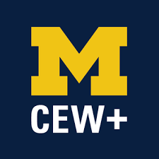

At CEW+, we navigate circumstantial barriers by providing academic, financial, and professional support to help you reach your personal potential. Established to support women through higher education, we lift up women and all underserved communities at U-M and beyond. Through career and education counseling, funding, workshops, events, and a diverse, welcoming community, we exist to empower. We are CEW+, and we are here to help you reach your potential.
About Us
CEW+ empowers women+ and underserved individuals in the University of Michigan and surrounding communities by serving as an advocate and providing resources to help individuals reach their academic, financial, and professional potential.
WHAT WE DO
CEW+ provides immediate and ongoing services and the financial support needed to ensure educational success and degree completion. Women+ and underserved students are CEW+’s primary constituency, but all students are welcome. CEW+ also serves those who encounter education and career obstacles based on their non-linear paths to, and experiences within, the University community.
We proudly support students, faculty, staff, and the surrounding community with:
History
Established in 1964, the Center for the Education of Women+ was a pioneering university women’s center. Designed to serve the needs of women students as well as women returning to school or work, CEW+ (then known as the Center for the Continuing Education of Women) was founded with a three-part mission of service, advocacy, and research. The Center for the Education of Women+ (now known as CEW+) continues its work today, serving University students, staff and faculty, community members, and all genders, facing education, employment, or other life issues.
THE CEW+ TEAM
Our dedicated team is passionate about helping underserved communities and individuals at the University and beyond thrive.